NEWLIFE–
FRIENDSHIP
CUP 2025
Rose FC giành danh hiệu đầu tiên trong lịch sử CLB. Album này lưu lại không khí trên sân, những khoảnh khắc sau trận và các gương mặt đã góp phần tạo nên ngày 13.07.2025.
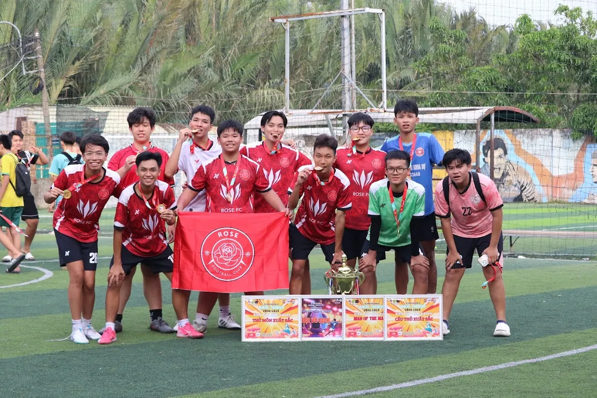
Những khoảnh khắc trên sân.
Không cố biến mọi tấm ảnh thành poster. Đây là phần giữ lại nhịp thật của ngày thi đấu — giao tiếp, tập trung, xử lý bóng và cảm xúc ngoài đường biên.
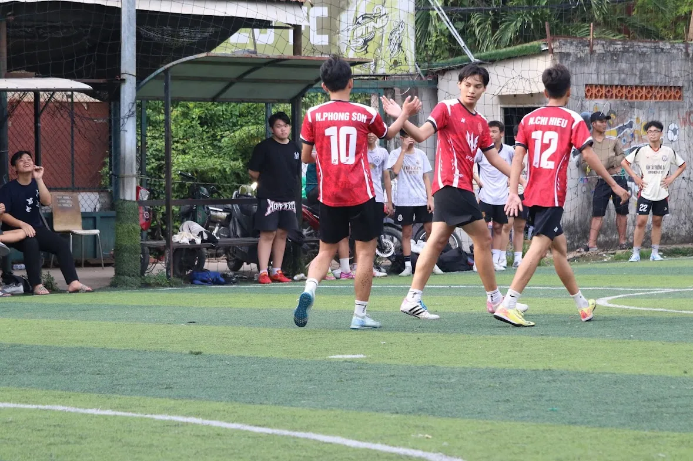
On-pitch connection
Khoảnh khắc kết nối giữa các cầu thủ trong trận đấu.
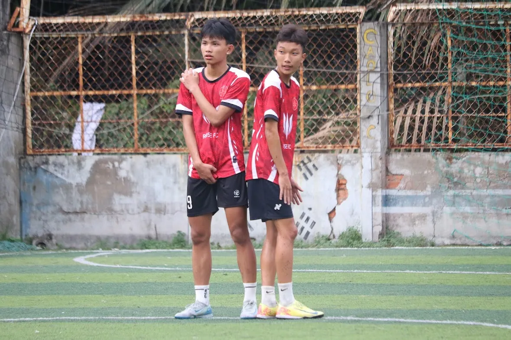
Ready for the next phase
Một khoảnh khắc bình tĩnh giữa nhịp thi đấu.
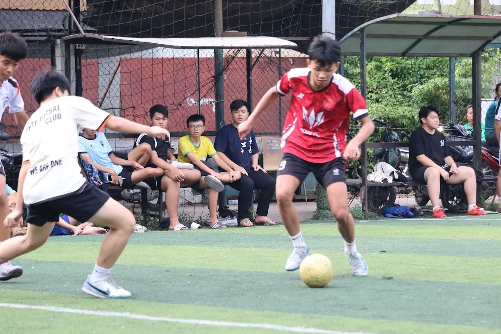
Game action
Pha xử lý bóng mang đúng không khí mộc của bóng đá phong trào trẻ.
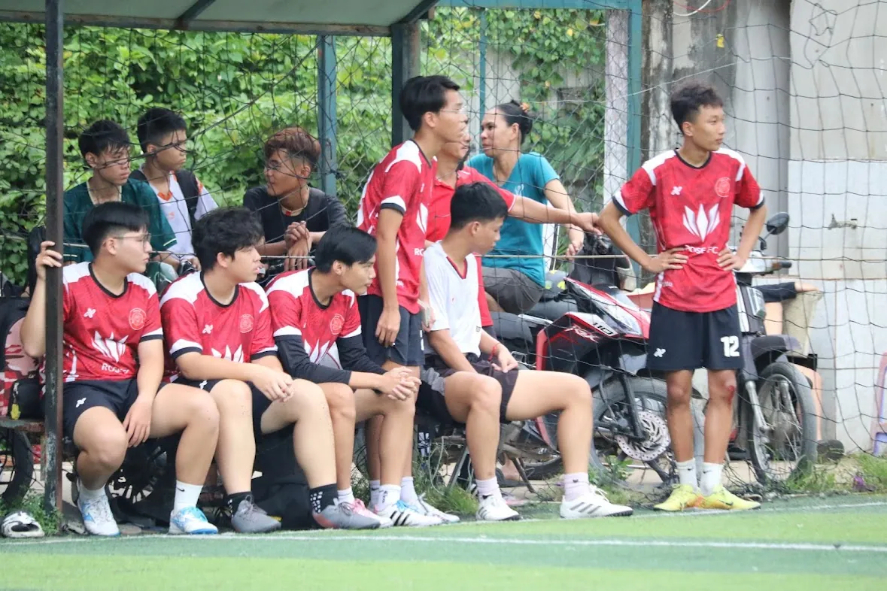
Bench & touchline
Khu vực ngoài sân — nơi cảm xúc và sự tập trung của cả đội vẫn tiếp tục.
A moment from 13.07.2025
Một đoạn clip ngắn từ ngày thi đấu. Video không có tiếng và không tự phát để người xem chủ động mở khi muốn.
From the archive
Film clip · Newlife–Friendship Cup 2025.
Chiếc cúp đầu tiên.
Những hình ảnh sau trận lưu lại cảm giác của một cột mốc nhỏ nhưng rất quan trọng với lịch sử đầu tiên của Rose FC.
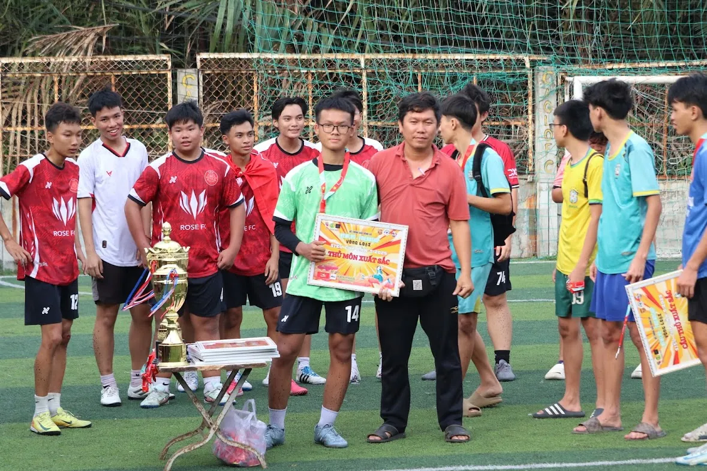
Award moment
Một khoảnh khắc trong phần trao giải sau trận.
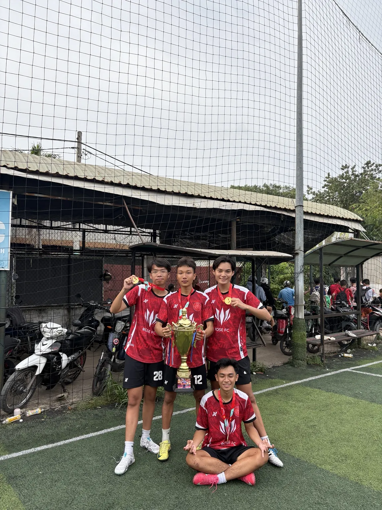
With the trophy
Các thành viên Rose FC chụp cùng chiếc cúp và huy chương của giải.
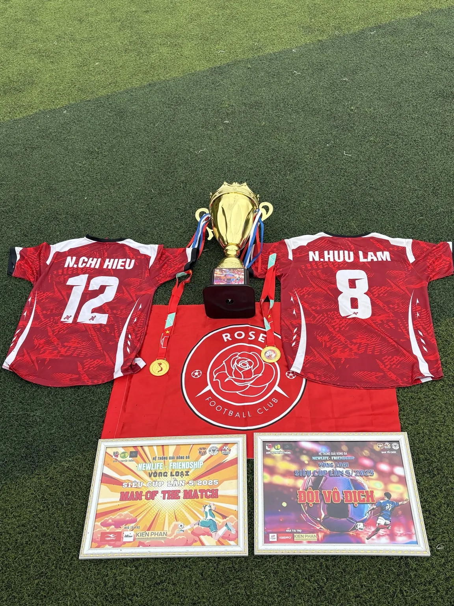
The first silverware
Cúp, huy chương, cờ và áo đấu — một ảnh archive đặc trưng của cột mốc này.
Những gương mặt trong ngày vô địch.
Bốn chân dung được tách thành một phần riêng để album có chiều sâu cá nhân hơn, thay vì dồn tất cả ảnh vào một gallery.
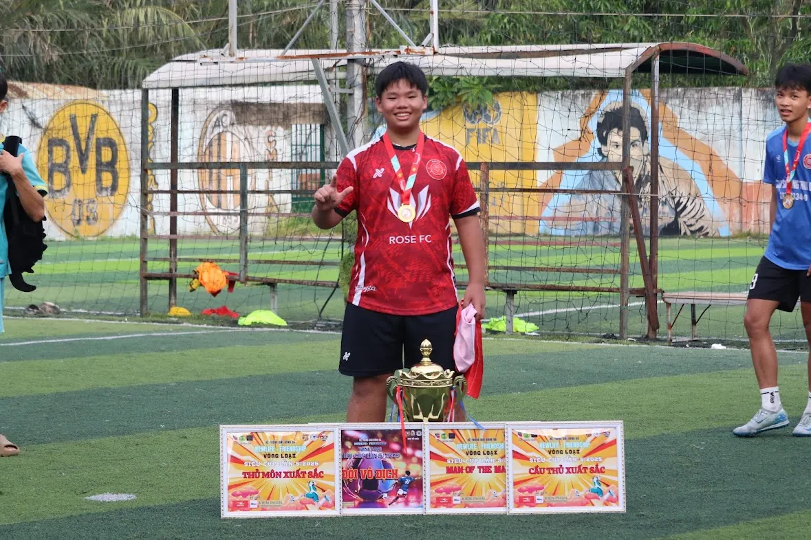
Trịnh Tùng Lâm
Newlife–Friendship Cup 2025.
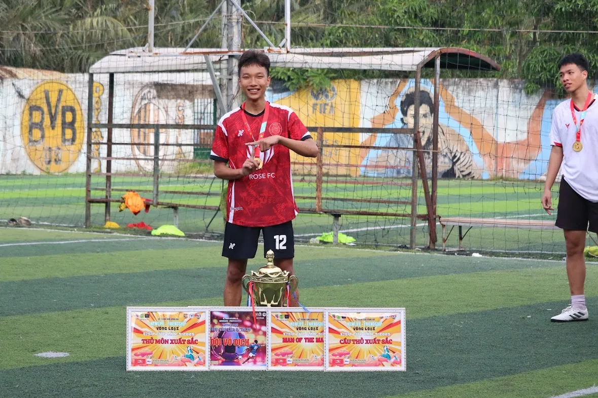
Nguyễn Chí Hiếu
Newlife–Friendship Cup 2025.
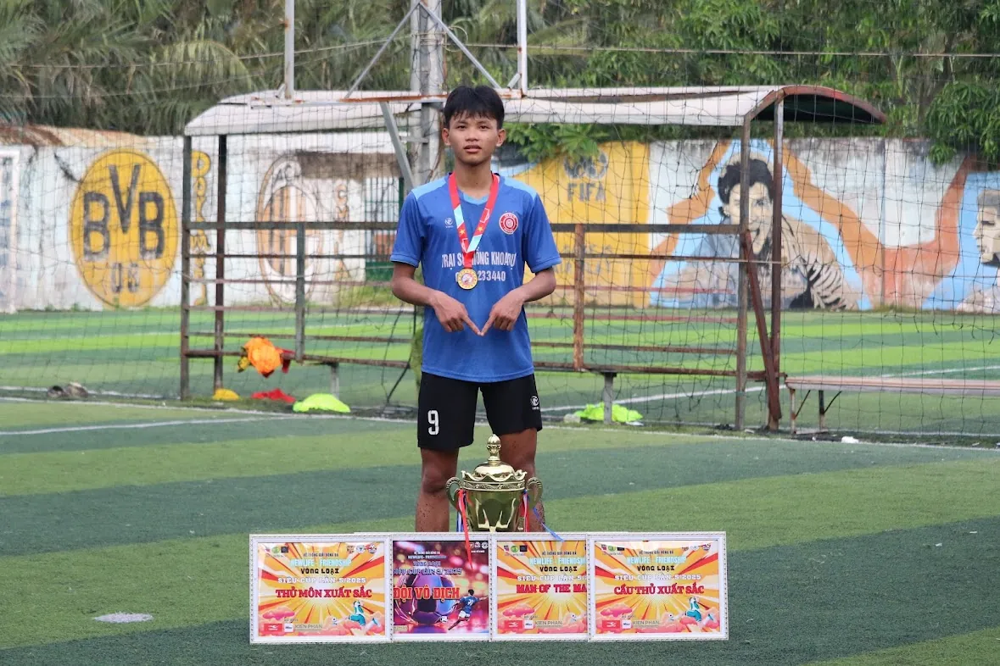
Nguyễn Hoàng Duy
Newlife–Friendship Cup 2025.
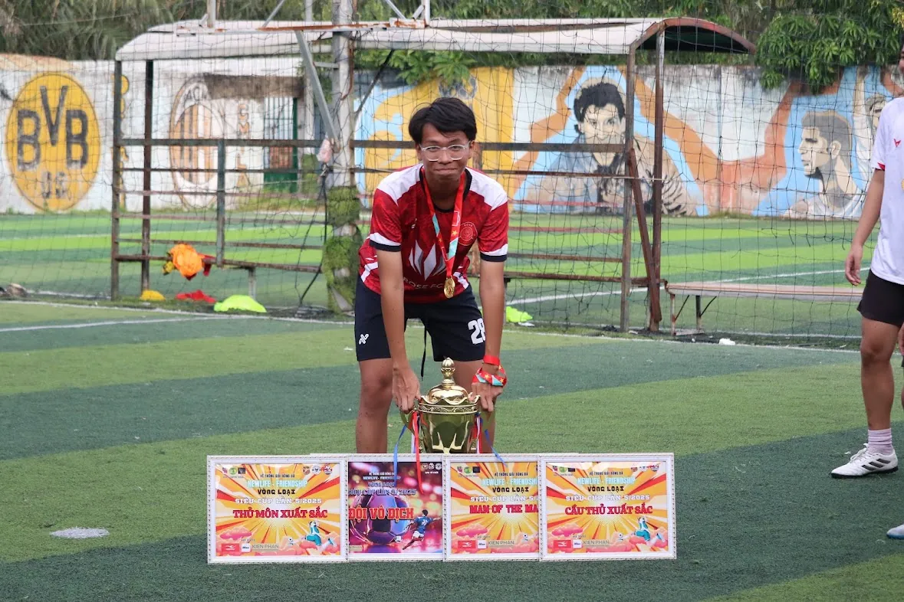
Phùng Gia Bảo
Newlife–Friendship Cup 2025.
THE FIRST ONE.
Chiếc cúp đánh dấu danh hiệu đầu tiên trong lịch sử Rose Football Club. Một khởi đầu còn nhỏ, nhưng đủ quan trọng để được giữ lại thật tử tế.